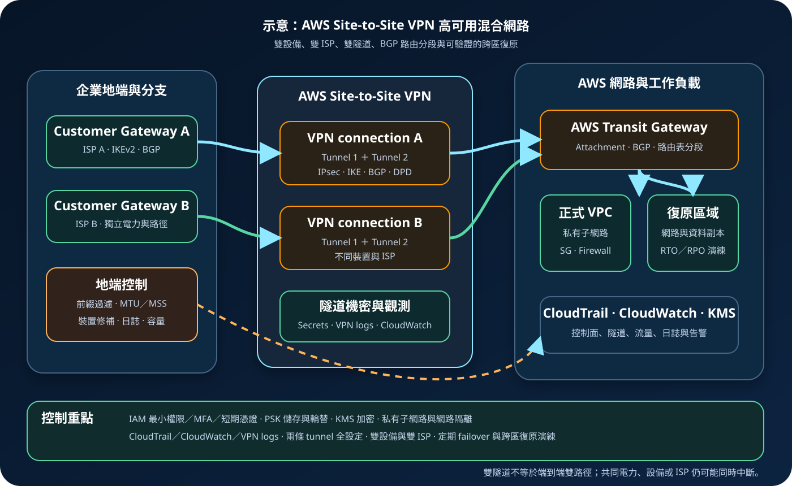

AWS Site-to-Site VPN：IPsec 隧道、BGP 路由與混合網路備援
AWS Site-to-Site VPN 透過 IPsec 在地端、分公司或其他網路與 AWS 之間建立加密連線。每條 VPN connection 具備兩條隧道，但真正的高可用仍取決於兩條隧道是否都完成設定、Customer Gateway 裝置是否冗餘、BGP 與路由是否可收斂，以及網際網路、電力與上游電信路徑是否存在共同故障點。
作者：Dr. William｜查閱與發布：2026-10-23
服務定位
AWS Site-to-Site VPN 是 AWS 管理端點的 IPsec VPN 服務，可把企業網路、辦公據點、資料中心或其他雲端網路連到 Amazon VPC。AWS 端目標可使用附掛單一 VPC 的 Virtual Private Gateway，或使用集中連接多個 VPC 與地端網路的 Transit Gateway；完整架構仍需在地端部署並管理相容的 Customer Gateway device。
Site-to-Site VPN 常用於快速建立混合網路、作為 Direct Connect 的加密備援、連接中小型據點，或在專線交付前提供過渡路徑。它以公共或私有外層 IP 建立隧道，實際延遲與封包品質會受底層路徑影響；若需求重點是固定專用容量、極高傳輸量或更可預測的物理路徑，應評估 Direct Connect 或複合架構。
核心概念與服務邊界
連線與路由元件
- VPN connection：地端 Customer Gateway 與 AWS target gateway 之間的邏輯連線；每條 connection 包含兩條 IPsec 隧道。
- VPN tunnel：承載加密流量的 IPsec 通道，包含外層端點、內層 tunnel IP、IKE 與 IPsec 參數。
- Customer Gateway resource：AWS 端用來描述地端裝置 IP、BGP ASN 與認證方式的資源。
- Customer Gateway device：企業管理的實體或虛擬 VPN 裝置，負責 IKE、IPsec、BGP、路由、日誌與故障切換。
- Virtual Private Gateway：附掛單一 VPC 的 AWS 端 VPN gateway，適合邊界較單純的架構。
- Transit Gateway：集中連接多個 VPC、VPN 與 Direct Connect，支援路由表分段與較大規模混合網路。
- 動態路由：使用 BGP 交換前綴與路徑狀態，較適合故障收斂與多路徑治理。
- 靜態路由：人工指定遠端網段，適合範圍小且穩定的情境，但變更與故障切換彈性較低。
安全、效能與觀測元件
- IKEv2 與 IPsec：協商身分、金鑰與加密參數；應依裝置支援與政策停用不必要的舊演算法。
- 預先共用金鑰或私有憑證：隧道可使用 PSK，亦可依支援條件使用 AWS Private CA 的私有憑證。
- Secrets Manager：可用於強化 PSK 儲存；地端裝置端仍需安全交付、保存與輪替。
- 雙隧道：每條 VPN connection 提供兩條 AWS 端隧道，應同時完成設定並驗證切換。
- Accelerated VPN：Transit Gateway 架構可選用 AWS Global Accelerator 改善部分跨網際網路路徑；須另計費且有適用限制。
- CloudWatch metrics：監控 TunnelState、TunnelDataIn 與 TunnelDataOut，建立中斷與異常流量告警。
- Site-to-Site VPN logs：可送至 CloudWatch Logs，提供 IKE、IPsec、DPD、BGP 狀態與路由更新資訊。
- CloudTrail：記錄相關 EC2／VPC 控制面 API，追蹤 VPN、gateway、路由與 tunnel option 變更。
適合與不適合的使用情境
適合
- 需要在數小時或數天內建立地端到 AWS 的加密混合網路連線。
- 分公司、門市、工廠或合作夥伴據點的流量可由相容 VPN 裝置承載。
- Direct Connect 尚未交付，或需要一條獨立於專線的加密備援路徑。
- 多 VPC 架構需要透過 Transit Gateway 集中 VPN attachment 與路由分段。
- 具備 BGP、IPsec、MTU、路由與防火牆故障排除能力，並能定期測試雙隧道。
不適合或不能單獨完成
- 要求固定專用頻寬、極穩定延遲或不經公共網際網路的主要路徑；應評估 Direct Connect。
- 只有單一 Customer Gateway device、單一 ISP 或單一電力來源，卻把 AWS 端雙隧道視為端到端高可用。
- 地端與 VPC CIDR 重疊，且未先完成位址重整或經審查的轉換設計。
- 應用無法容忍短暫路由收斂、重新協商或 session 中斷，又缺乏應用層重試與多路徑能力。
- 需要精細的使用者遠端存取；員工端點連線通常應評估 AWS Client VPN 或其他零信任存取方案。
- 把 IPsec 視為完整資安控制；VPN 不會驗證應用輸入、限制資料存取或阻擋已獲網路可達性的橫向移動。
示意故事案例：連鎖診所的雙據點混合網路
以下為示意案例，不代表特定機構或正式部署。 一家連鎖診所將排程、影像索引與備份管理服務部署於 AWS，核心醫療設備仍位於兩個地端機房。團隊需要快速建立加密連線，並希望在單一防火牆或 ISP 維護時維持最低服務能力。
每個地端機房部署兩部可獨立供電的 Customer Gateway devices，分別使用不同 ISP。主要連線與備援連線都建立至 Transit Gateway，每條 connection 的兩條 tunnel 全部設定 IKEv2 與 BGP。Transit Gateway 路由表將醫療系統、管理網路與備份網路分段，只交換核准 CIDR；AWS 工作負載位於私有子網路，安全群組與 Network Firewall 依必要流向限制存取。
管理人員透過聯合登入、MFA 與短期憑證操作，PSK 使用 Secrets Manager 儲存並依維護窗口輪替，應用機密使用 Secrets Manager 或 Parameter Store，相關日誌與備份以 KMS 加密。CloudWatch 監控隧道狀態與流量，VPN logs 與 CloudTrail 集中保存。團隊每季中斷單一 tunnel、單一設備與單一 ISP，驗證 BGP 收斂、應用重試、警報與復原時間；第二 AWS 區域另保留可重建的網路、金鑰、機密、資料副本與執行手冊。

建置與運作流程
- 盤點需求：列出地端與 AWS CIDR、資料分類、流量方向、尖峰頻寬、延遲、RTO、RPO、IPv4／IPv6、合規與加密要求。
- 消除位址衝突：確認地端、分公司、VPC、Transit Gateway 與復原區域網段不重疊；不要把 NAT 當成未審查的永久補丁。
- 選擇 target gateway：單一 VPC 可評估 Virtual Private Gateway；多 VPC、集中路由或加速需求通常評估 Transit Gateway。
- 設計地端冗餘：使用不同 Customer Gateway devices、電力、ISP、邊界介面與路由程序，避免所有 tunnel 共用同一故障點。
- 選擇路由模式：裝置支援時優先評估 BGP；規劃 ASN、公告前綴、路由摘要、優先序、maximum-prefix 與不對稱路由處理。
- 建立 Customer Gateway：正確登錄外層 IP、BGP ASN 與認證方式；若位於 NAT 後方，確認 NAT-T 與裝置相容性。
- 建立 VPN connection：選擇 gateway、內外層 IP 版本、tunnel CIDR、IKE 版本、加密、完整性、DH group、生命週期與 DPD 行為。
- 保護隧道認證：採 PSK 時使用受控產生、Secrets Manager 儲存與輪替流程；採私有憑證時治理 Private CA、憑證生命週期與撤銷。
- 設定兩條隧道：在 Customer Gateway device 完整設定兩個 AWS endpoint，不只啟用第一條；核對 IKE、IPsec、BGP 與 tunnel IP。
- 設定 AWS 與地端路由：只交換必要 CIDR，限制 default route，核對 Transit Gateway route table association／propagation、VPC route table 與回程路徑。
- 設定網路控制：以私有子網路、安全群組、網路 ACL、AWS Network Firewall 或地端防火牆限制東西向與南北向流量。
- 收斂管理權限：VPN、Transit Gateway、路由、CloudWatch Logs 與 Secrets Manager 操作採 IAM 最小權限、MFA、短期憑證與變更審批。
- 啟用監控與稽核：建立 CloudWatch TunnelState／流量告警，啟用 VPN logs、CloudTrail、VPC Flow Logs、Transit Gateway Flow Logs 與地端設備日誌。
- 驗證 MTU 與應用：測試大型封包、MSS clamp、NAT-T、長連線、DNS、雙向流量、重試與應用健康；Site-to-Site VPN 不支援 Path MTU Discovery。
- 執行故障測試：分別停用 tunnel、Customer Gateway、ISP 與路由鄰居，量測 BGP 收斂、封包遺失、session 影響與告警時間。
- 建立復原方案：依業務需求準備第二 VPN connection、另一據點、Direct Connect 備援或第二 AWS 區域，並驗證資料與應用 RTO／RPO。
成本、可用性與維運考量
成本通常包含每條 VPN connection 的小時計費、AWS 資料傳出、公有 IPv4 位址、Transit Gateway attachment 與資料處理、CloudWatch Logs／metrics、CloudTrail、VPC Flow Logs、Secrets Manager、KMS、Network Firewall，以及地端設備、授權、ISP 與維運人力。Accelerated VPN 另包含 AWS Global Accelerator 小時費與資料傳輸加速費；不同頻寬型態、區域與功能支援須以查閱時的官方定價及配額確認。
每條 connection 的兩條 tunnel 終止於不同 AWS 裝置，可降低 AWS 端維護或單點風險，但若地端兩條 tunnel 終止於同一防火牆、同一 ISP、同一線路或同一電力，端到端仍然是單點。重要服務應建立第二個 Customer Gateway 與第二條 VPN connection，並使用 BGP 與實際故障演練驗證切換。
標準 VPN 的吞吐與實際效能受 tunnel 類型、封包大小、加密、裝置能力、網際網路路徑及是否使用 Transit Gateway／Cloud WAN 等因素影響。若需要較高頻寬，可評估支援條件下的 Large Bandwidth Tunnel；若跨網際網路路徑不穩定，可評估 Accelerated VPN；兩者都不能消除地端與應用瓶頸，也不應取代容量測試。
跨區復原不是複製一條 VPN 即完成。第二區域仍需具備 VPC／Transit Gateway、路由、安全政策、KMS 金鑰、Secrets、DNS、應用容量、資料副本、監控與切換程序。備援 tunnel 若從未承載正式流量，也可能因參數、路由或 MTU 問題在事故時失效。
Site-to-Site VPN 特有資安風險與控制
- 只有一條 tunnel 上線：兩條 tunnel 都要配置、監控與定期切換；不能把「資源存在」當成「備援可用」。
- 地端設備單點：重要環境使用第二個 Customer Gateway device、不同電力與不同 ISP，建立第二條 VPN connection。
- 過時或過寬加密套件：優先評估 IKEv2、AES-GCM 或符合政策的 AES、SHA-2 與適當 DH group；只開啟雙方實際需要的參數。
- PSK 外洩：使用高強度受控產生與輪替流程，優先評估 Secrets Manager 儲存；不得放入 Git、網頁、IaC 輸出、工單、聊天或日誌。
- 憑證治理不完整：採 Private CA 時管理簽發權限、效期、撤銷、根與中繼 CA 保護及裝置更新程序。
- BGP route leak：只公告與接受核准前綴，使用 prefix filter、maximum-prefix、路由摘要與變更審批。
- 錯誤 default route：明確定義 VPN 是否可承載預設路由，避免把非預期網際網路或管理流量導入 AWS。
- 不對稱路由：核對雙 tunnel、雙設備、Transit Gateway appliance mode、防火牆狀態與回程路徑，避免 stateful 檢查失敗。
- CIDR 重疊：建立組織級 IPAM 與位址審批；必要轉換須文件化、限制範圍並監控，不掩蓋長期技術債。
- 網路可達即過度信任：以私有子網路、安全群組、Network Firewall、主機防火牆、應用授權與微分段落實網路隔離並限制橫向移動。
- 管理權限過大：VPN、Customer Gateway、Transit Gateway、路由與 Secrets 權限分離，使用 IAM 最小權限、MFA、短期憑證與雙人覆核。
- 缺乏控制面稽核：集中 CloudTrail，對 VPN 建立、刪除、tunnel option、路由、gateway attachment 與 Secrets 存取變更告警。
- 缺乏 tunnel 細節：啟用 VPN logs，分析 IKE、IPsec、DPD、BGP 與 route status；CloudWatch 監控 TunnelState 與流量。
- 日誌包含敏感資料：地端設備與集中日誌不得記錄 credential、Access Key、Secret Key、Token、密碼、cookie、PSK 或敏感 payload；日誌使用 KMS 與最小權限保護。
- MTU 黑洞：依 tunnel 類型與裝置調整 MTU／MSS，測試分段、NAT-T 與大型封包，不依賴未支援的 Path MTU Discovery。
- 備份只保留設定檔：備份並版本化核准的裝置設定與 IaC，但移除所有機密；定期從乾淨環境重建並驗證。
- 跨區復原未驗證：第二區域的網路、KMS、Secrets、資料與應用必須可實際啟動，並以演練證明 RTO／RPO。
共同責任邊界
AWS 負責 Site-to-Site VPN 服務的 AWS 端 endpoint、受管控制面與 AWS 全球基礎設施的安全。客戶負責 Customer Gateway device、地端網路、ISP、電力、作業系統或設備韌體、IPsec／IKE 參數、BGP、CIDR、路由、安全規則、機密、監控、容量與復原。使用 Transit Gateway、CloudWatch、CloudTrail、Secrets Manager、KMS 或 Network Firewall 時，各服務仍有各自的設定與資料治理責任。
網路加密不等於身分授權。管理者應使用聯合登入、MFA、短期憑證與最小權限；工作負載仍需以角色取得短期權限，應用程式機密使用 Secrets Manager 或 Parameter Store，資料與日誌依需求使用 KMS。正式 credential、Access Key、Secret Key、Token、密碼、cookie 或 PSK 不得出現在程式碼、網頁、裝置備份、IaC state、標籤、日誌或文件。
上線與維運可執行檢查清單
- □ 已確認 Site-to-Site VPN 符合頻寬、延遲、交付時間、加密、RTO、RPO 與成本需求。
- □ 地端、VPC、Transit Gateway、其他雲端與復原區域 CIDR 已完成不重疊驗證。
- □ Virtual Private Gateway 或 Transit Gateway 的選擇符合單一 VPC、集中路由與擴展需求。
- □ 重要服務具備不同 Customer Gateway devices、電力、ISP 與外層 IP。
- □ 每條 VPN connection 的兩條 tunnel 都已完整設定並可承載流量。
- □ IKE、IPsec、加密、完整性、DH group、生命週期、DPD 與 NAT-T 參數已依政策收斂。
- □ PSK 已由受控流程產生、儲存與輪替，並評估 Secrets Manager；未出現在任何公開或版本控制內容。
- □ 採憑證驗證時，Private CA、簽發、效期、撤銷與裝置更新責任已明確。
- □ BGP ASN、公告前綴、prefix filter、maximum-prefix、路由優先序與回程路徑已驗證。
- □ Transit Gateway route table association／propagation 與 VPC route table 未造成跨環境旁路。
- □ 私有子網路、安全群組、Network Firewall／地端防火牆只允許必要來源、目的與連接埠。
- □ VPN 管理採 IAM 最小權限、MFA、短期憑證、權限分離與變更覆核。
- □ CloudWatch 已監控 TunnelState、TunnelDataIn、TunnelDataOut 並設定單隧道與全斷告警。
- □ VPN logs、CloudTrail、VPC／Transit Gateway Flow Logs 與地端設備日誌已集中並以 KMS 保護。
- □ 日誌、備份與設定匯出已確認不含 credential、Access Key、Secret Key、Token、密碼、cookie 或 PSK。
- □ 已測試 MTU、MSS、NAT-T、DNS、雙向流量、長連線、應用重試與大型封包。
- □ 已分別測試 tunnel、Customer Gateway device、ISP、電力與 BGP 鄰居故障。
- □ 已估算 VPN 小時費、IPv4、資料傳出、Transit Gateway、加速、日誌、KMS、Secrets 與地端成本。
- □ 備援容量可承載最低業務量，且監控能在路由收斂前後持續運作。
- □ 第二區域具備可重建的網路、路由、KMS、Secrets、DNS、應用、資料與經驗證的 RTO／RPO 程序。
AWS 官方一手來源
- What is AWS Site-to-Site VPN?（查閱：2026-10-23）
- Get started with AWS Site-to-Site VPN（查閱：2026-10-23）
- Tunnel options for AWS Site-to-Site VPN（查閱：2026-10-23）
- Site-to-Site VPN tunnel authentication options（查閱：2026-10-23）
- Pre-shared key storage with AWS Secrets Manager（查閱：2026-10-23）
- Redundant Site-to-Site VPN connections for failover（查閱：2026-10-23）
- Accelerated AWS Site-to-Site VPN connections（查閱：2026-10-23）
- CloudWatch metrics for Site-to-Site VPN（查閱：2026-10-23）
- AWS Site-to-Site VPN logs（查閱：2026-10-23）
- Test a Site-to-Site VPN connection and tunnel failover（查閱：2026-10-23）
- AWS VPN pricing（查閱：2026-10-23）
- AWS Shared Responsibility Model（查閱：2026-10-23）
內容說明
本文依查閱日可用的 AWS 官方文件整理，作為基礎學習與架構討論材料；實際部署仍須依最新區域支援、gateway 類型、頻寬、IPv4／IPv6、裝置相容性、演算法、配額、定價、資料分類、法規、網路路徑與故障演練結果調整。